Historia
Tycho Brahe
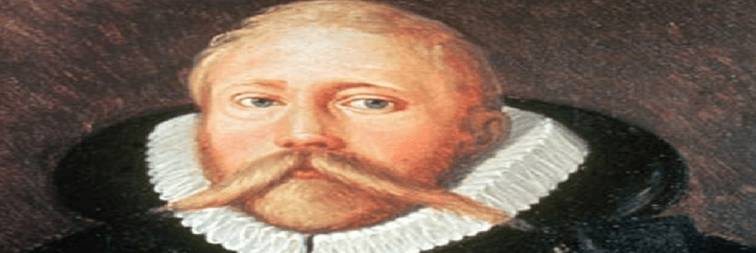
Nascimento: 14 de dezembro de 1546, Castelo de Knutstorp, Suécia
Falecimento: 24 de outubro de 1601, Praga, Tchéquia
Descobertas: Estudou detalhadamente as fases da lua e compilou muitos dados que serviriam mais tarde a Johannes Kepler para descobrir uma harmonia celestial
Formação: Universidade de Halle-Wittenberg (1566–1566)
Johannes Kepler
Nascimento: 27 de dezembro de 1571, Weil der Stadt, Alemanha
Falecimento: 15 de novembro de 1630, Ratisbona, Alemanha
Descobertas: Três leis fundamentais da mecânica celeste, denominadas por Leis de Kepler
Formação: Universidade de Tubinga (1591–1594)
Nacionalidade: Alemão, Romano-germânico
Isaac Newton
Nascimento: 4 de janeiro de 1643, Woolsthorpe Manor, Reino Unido
Falecimento: 31 de março de 1727, Kensington, Londres, Reino Unido
Descobertas: Leis de Newton, Lei da gravitação universal
Formação: Trinity College (1667–1668)
Nacionalidade: Inglês, Britânico
Resumo historico
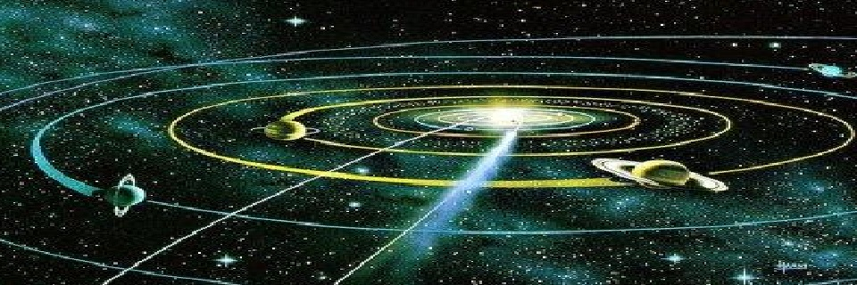
Ao falamos de gravitação deve-se ter em mente que ela é uma das Interações fundamentais da natureza, mas ela só é perceptiva apenas na escala astronômica. A evolução da teoria da gravitação esteve sempre ligada à história da astronomia.
A teoria da gravitação começou a ganha uma forma sólida quando Tycho Braché (1546-1601) com apoio do Rei Frederico II conseguiu montar um grande observatório, comparável ao que seria um acelerador nossa época. Todas as observações eram feitas a olho nu (não havia telescópio). Tycho Braché toda a sua vida coleta de dados sobre o movimento dos planetas.
Então Johannes kleper (1571-1630) entra no jogo, Kleper foi assistente de Tycho Braché e seu sucessor no observatório. Desde o início de sua carreira, Kepler sempre observou o universo como algo perfeito, isso o levou a crer que os meios das órbitas planetárias deviam ter alguma explicação geométrica-mística, para assim ser descrito em termos de figura perfeitas, como é o caso de esferas.
Tycho Braché morreu depois de apenas uma colaboração deixando Kleper o legado de suas observações.
Kepler estudou as observações do astrônomo Tycho Brahe e descobriu que estas observações seguiam três leis matemáticas relativamente simples. Suas três leis do movimento planetário desafiavam a astronomia e física de Aristóteles e Ptolomeu. Sua afirmação de que a Terra se movia, seu uso de elipses em vez de epiciclos, e sua prova de que as velocidades dos planetas variavam, mudaram a astronomia e a física.
A partir dessas observações e estudo sobre as leis de kleper, Newton chegou à seguinte lei, denominada Lei da Gravitação Universal, a Lei da Gravitação Universal foi somente uma das grandes descobertas do gênio Newton para a ciência, dentre várias outras que ele nos presenteara.
Gravitação
Foi por intermédio de Kepler que a Astronomia se desvencilhou da Tecnologia para se ligar definitivamente a Física. Kepler verificou a existência de notórias regularidades nos movimentos dos planetas, e assim ele pode formular as leis que dão todo o alicerce a gravitação universal, as famosas leis de Kepler.
PRIMEIRA LEI: LEI DAS ÓRBITAS
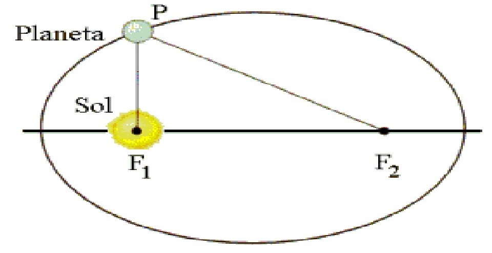
Em relação a um referencial no Sol, os planetas movimentam-se descrevendo órbitas elíptica, ocupando o Sol um dos focos.
O ponto da órbita mais próximo do Sol é denominado periélio; o mais afastado, afélio;
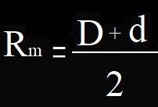
Chamamos de D e d as distâncias do periélio e do arfélio o centro do Sol, respectivemente, o raio medio da orbita(Rm ) pode ser obtido pela seguinte relação:
SEGUNDA LEI: LEI DAS ÁREAS
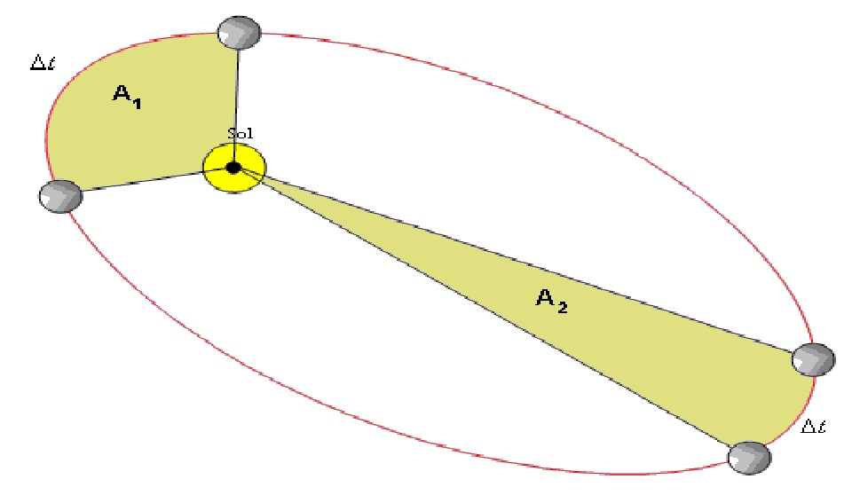
O segmento que une o centro do sol e um planeta varre áreas iguais em intervalo de tempos iguais.
Sendo (A) a area e (∆t) o intervalo de tempo, podemos escrever:
A constante de proporcionalidade Va é denominada velocidade areolar e caracteriza a rapidez com que o planeta percore uma area em relalçao ao Sol.
TERCEIRA LEI: LEI DOS PERIODOS
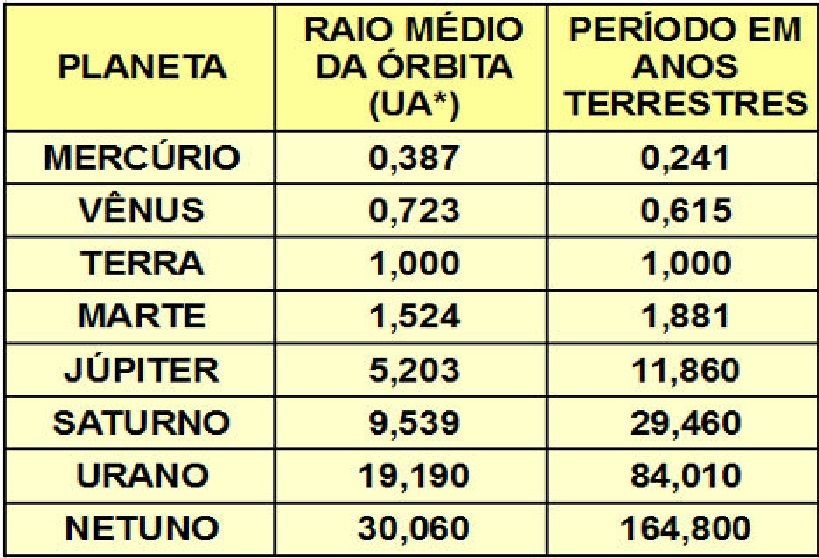
Para qualquer planeta do Sistema Solar, é constante o quociente do cubo do raio médio da órbita, R3, pelo quadrado do periodo de revolução(ou translação) T2, em torno do sol.
Sendo (T) o periodo de translação e (R) o raio medio da orbita, podemos escrever:
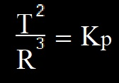
A constante de proporcionalidade Kp é denominado contante de Kepler e seu valor depende apenas da massa do Sol e das unidades de medidas.
LEI DE NEWTON: ATRAÇÃO DAS MASSAS
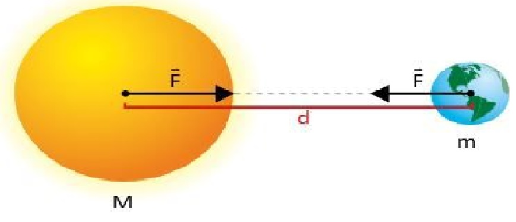
As leis de Kepler descrevem corretamente o movimento dos planetas, mas não explicam a razão destas trajetórias. Isaac Newton foi quem explanou sobre o assunto. Em 1687, Newton lançou as bases da Física Clássica com a publicação de Princípios Matemáticos da Filosofia Natural.
Nesta obra Newton propõe a lei da atração gravitacional para explicar os movimentos dos planetas em torno do Sol. Os planetas são mantidos em órbita em torno do Sol devido a uma ação mútua, ou seja, devido a força entre o Sol e os planetas.Verificados através de experimentos, a lei da gravitação universal mais às leis de Newton, foi um passo decisivo na Astronomia, prevendo as trajetórias de todos os corpos sob ação gravitacional.
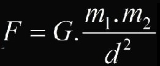
Sendo G a constante de gravitação universal:
G = 6,67 . 10-11 Nm2/kg2
A força de atração gravitacional se aplica a quaisquer dois corpos de massas m1 e m2, independente do meio em que estejam imersos. Somente é percebido quando um dos corpos possui uma massa extremamente grande.
CAMPO GRAVITACIONAL
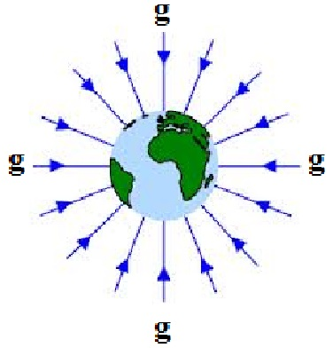
Campo gravitacional é como chamamos a região de perturbação gravitacional que um corpo gera ao seu redor. Dois corpos que possuem massa interagem devido ao campo que geram ao seu redor. Em outras palavras, um corpo que possui massa tem sua atração, exercida sobre outros corpos, representada pelo campo gravitacional, definido pela expressão a seguir:
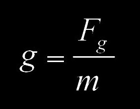
Onde m é o corpo que sofre a ação do campo gravitacional.
Pela lei da geavitação universal podemos tirar que o campo gravitacional gerado por um corpo é dadpo pela expressão:
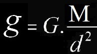
Onde M é o corpo que sofre a ação do campo gravitacional.
SATELITES E ORBITAS
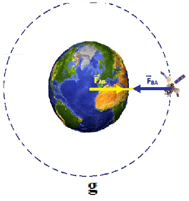
Um satélite seria tudo aquilo que orbita algo de maior tamanho, desde um planeta anão até galáxias inteiras (que orbitam outras de maior dimensão e força). Usando as leis de Kepler, lei da gravitação universal e os conhecimentos de movimento circular uniforme, podemo concluir que a velocidade orbital de um satelite é dada por:
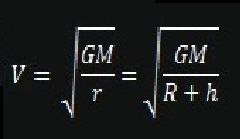
Onde M é a massa do planeta, R é o raio de planeta, haltitude do satelite e rraio da orbita.
E seu periodo de revolução é:
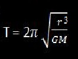
Onde M é a massa do planeta e rraio da orbita
Se o periodo de revolução do satélite for igual a o periodo de rotação do planeta o satelite é denominado geoestacionario, pois para um observador no planete ele esta em repouso.
Exercicios
(Questão 01) Sabendo que a distância de um planeta ao sol no arfelio é 5.1015 Km e no periélio é 715 Km calcule seu raio médio.
(Questão 02) Um planeta descreve uma elipse em torno do Sol cuja área é A=10.1020 m2. Qual é a área varrida pelo raio que liga esse planeta ao Sol entre 50 dias do mesmo ano.(Um ano nesse planeta são 500 dias).
(Questão 03) Sabendo que o raio médio da orbita da terra é 1,5.1011 m e o da órbita de Júpiter é 8.1011 m. Calcule o período de revolução de Júpiter em anos terrestres.
(Questão 04) Calcule o módulo da força de atração gravitacional entre João que pesa 70 Kg e Maria que pesa 60 Kg se eles estão distante 1m um do outro.(G=6,67.10-11 N.m2Kg-2)
(Questão 05) O raio da terra é aproximadamente 6,4.106 Km e sua massa aproximadamente 6.1024 Kg calcule o seu campo gravitacional.(G=6,67.10-11 N.m2Kg-2)<
(Questão 06) Um satélite natural está a 390 000 Km em relação da superfície. Sabendo que o raio da terra é aproximadamente 6400 Km e sua massa aproximadamente 6.1024Kgcalcule seu período de revolução ao redor da terra.(G=6,67.10-11 N.m2Kg-2)
(Questão 07) Sabendo que a distância da terra ao sol no arfelio é 2.1011 e no periélio é 1.1011 calcule seu raio médio.
(Questão 08) A Terra descreve uma elipse em torno do Sol cuja área é A=7.1022 m2. Qual é a área varrida pelo raio que liga a Terra ao Sol entre 1º de abril até o dia 30 de abril do mesmo ano.
(Questão 09) Considere que o raio médio da orbita da terra é 1.1011 m e o da órbita de Mercúrio é 4.1010 m. Calcule o período de revolução de Mercurio em dias terrestres.
(Questão 10) Calcule o módulo da força de atração gravitacional entre Sol que pesa 2.1030 Kg e Marte que pesa 6,4.1023 se eles estão distante 2.1011m um do outro.(G=6,67.10-11)
(Questão 11) O raio de Jupter é aproximadamente 7.107 Km e sua massa aproximadamente 2.1027 Kg calcule o seu campo gravitacional.(G=6,67.10-11 N.m2Kg-2)
(Questão 12) Um satélite artificial está a 3600 Km em relação da superfície. Sabendo que o raio da terra é aproximadamente 6400 Km e sua massa aproximadamente 6.1024 calcule seu período de revolução ao redor da terra. (G=6,67.10-11 N.m2Kg-2)
Gabarito
De (01) a (06) Click aqui
07) 1,5.1015 Km
08) 5,8 21 m2
09) 88 dias.
10) 2.1029N
11) 25 m/s2
12) 9932s ou 3h
Exemplos
(Questão 01) O raio médio de Vênus com relação ao Sol equivale à 108000000 km e seu período de translação equivale à 222,7 dias (unidades terrestres). Prove que o ano terrestre (ano na Terra) equivale a um valor próximo de 365 dias, sabendo que o raio médio Terra-Sol é igual a 150000000 km.
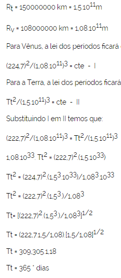
(Questão 02) Se houvesse um planeta no sistema solar 20% mais afastado do Sol que a Terra, qual seria o seu período de revolução em anos terrestres?
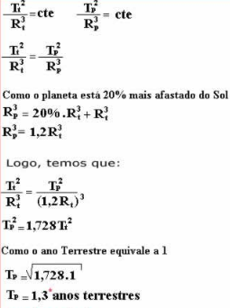
(Questão 03) (UFU-MG) Um dos avanços na compreensão de como a Terra é constituída deu-se com a obtenção do valor de sua densidade, e o primeiro valor foi obtido por Henry Cavendish no século XIV. Considerando a Terra como uma esfera de raio médio de 6.300 km, qual é o valor aproximado da densidade de nosso planeta?
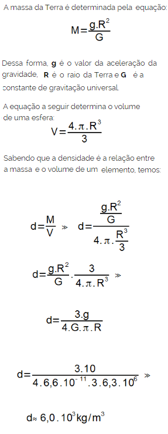
(Questão 4) De acordo com a Lei de Gravitação Universal de Newton, se a distância entre um par de objetos é triplicada, a força é equivalente a (o):
a) Um nono do valor original.
b) Nove vezes do valor original.
c) Um terço do valor original.
d) Três vezes do valor original.
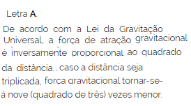
(Questão 05) Qual a intensidade do campo gravitacional da Terra sobre a Lua?
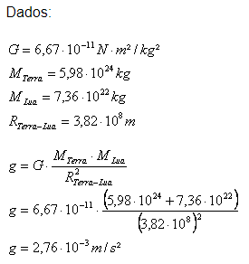
(Questão 06) Um satélite de comunicação em órbita circular tem raio R e período T. Um outro satélite de órbita circular tem período T/3. Qual o raio da órbita do segundo satélite?.
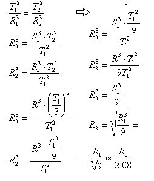
Bibliografia
Livro Física Mecânica (helou, Gualter, Newton) Vol. 1
Livro Física Mecânica (helou, Gualter, Newton) Vol. 1